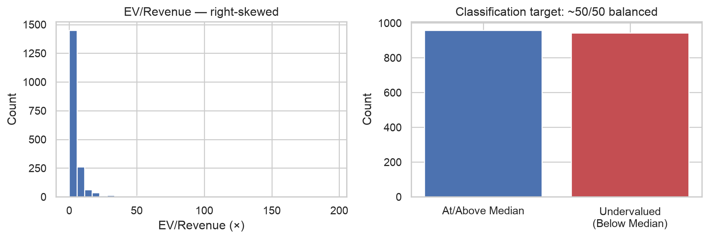
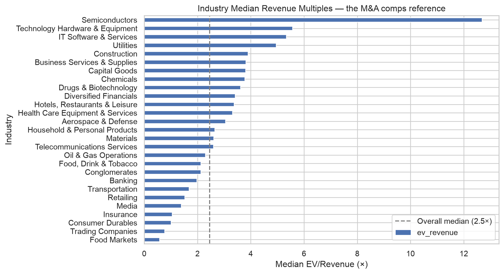
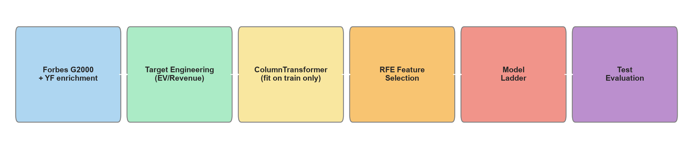
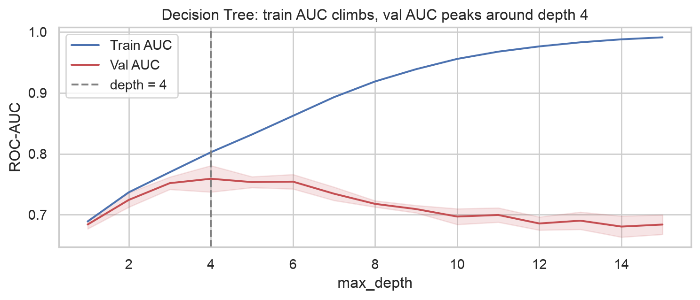
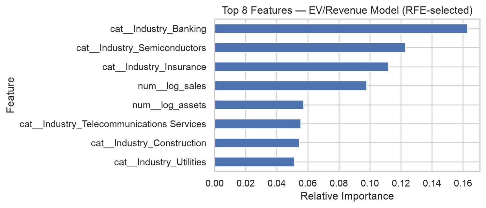

Machine Learning EV/Revenue Multiples · Live Company Search · Description-Based Comps (D4)
2026-07-02
Comparable companies valuation — automated and scalable:
Dataset: Forbes Global 2000, 2026 edition — 1,901 public companies across 27 industries (after removing EV/Revenue outliers). Used as a comps universe — the same methodology investment banks use to value acquisition targets.
Regression — Revenue Multiple
Classification — Undervaluation Screen

app.py trains on live
Semiconductors (~17×) and Software (~5.5×) command the richest multiples; Food Markets, Trading, and Insurance trade near or below 1×. Industry is the most important M&A valuation input after margin quality.

Important
No leakage: MarketValue_B/net_debt_B compute the target and are excluded from features. Scaler, one-hot encoder, and RFE selector all fit inside the Pipeline on the training split only.
Four rungs per task — simple to complex:
| Rung | Regression (EV/Rev ×) | Classification (Undervaluation) |
|---|---|---|
| 1. Baseline | DummyRegressor (mean) | DummyClassifier |
| 2. Linear | Ridge Regression | Logistic Regression |
| 3. Tree | Decision Tree | Decision Tree |
| 4. Ensemble | XGBoost | XGBoost |
Every rung runs through the same RFE-selected feature set (top half of transformed columns) — a fair, apples-to-apples comparison.

Accuracy F1 ROC-AUC
Model
Dummy 0.493 0.491 0.493
Logistic Regression 0.709 0.712 0.764
Decision Tree 0.646 0.651 0.715
XGBoost 0.698 0.704 0.791Dummy baseline ≈ 0.48 AUC (balanced task). XGBoost reaches ~0.77 AUC, learning non-linear interactions between margin, industry, and scale that linear models partially miss.
R² MAE (log) RMSE (log)
Model
Dummy (Mean) -0.00 0.67 0.90
Ridge 0.30 0.53 0.75
Decision Tree 0.16 0.58 0.82
XGBoost 0.35 0.47 0.72Target is log1p(EV/Revenue) — reduces the right-skew that a raw multiple has. XGBoost’s R² gain over Ridge here is real but modest: industry and margin already capture most of the signal a linear model can extract.

Industry and scale dominate. RFE eliminates the raw Sales_B/Assets_B columns in favour of their log-transformed versions — markets pay premiums for industry exposure and margin quality, the same factors M&A buyers pay up for.
Forbes Global 2000 Comparable Companies Tool — run locally today via streamlit run app.py
Note
Model trains in-process at app startup (~2 seconds) from data/forbes_enriched.pkl — no serialized model files. Not yet deployed to a public URL.
Repository: local project (MADA/) — see README.md for setup
Full analysis: analysis.qmd → rendered HTML Live app: streamlit run app.py Contact: rene.mohoric@gmail.com